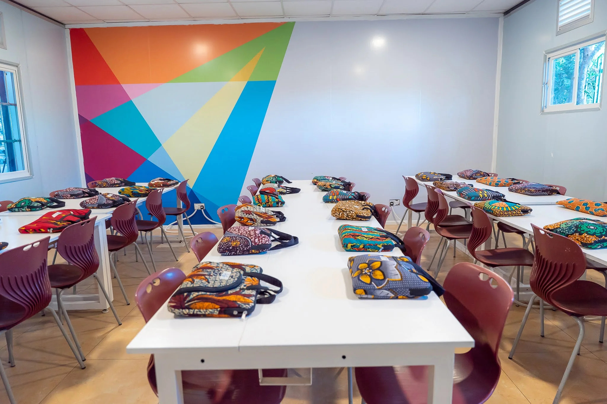

Upon first arriving at AkiraChix, I was amazed by the beautiful and serenity of the extraordinary mansion. I truly appreciated the warm welcome we received, with beautiful smiles gracing every face. The willingness of everyone to offer assistance whenever I needed it was heartwarming and greatly appreciated.
The first week was very long as I had to learn and adapt to everything and people I found here. I was surprised by how this school has a lot of cats running around and they’re all beautiful😊.
Of Course it was happy because i didn’t have to carry anything as they provided anything i could need while living in the campus😌:
AkiraChix classes were more beautiful as am going to spend 10 months studying in. I also appreciated how the trainers are so nice and provides a comfort for evryone to be able to ask any questions.
The experience i had at AkiraChix in first week was Fantastic, There more things to explore, Learrn and fight for. You can find more information about AkiraChix by visiting the website, Click the following link.
Visit website